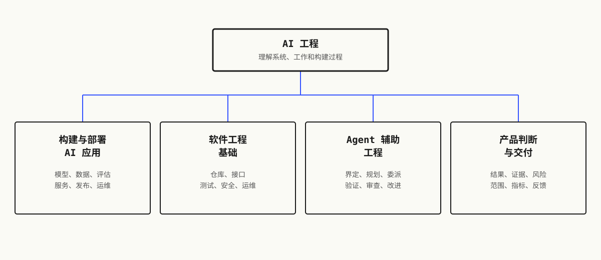
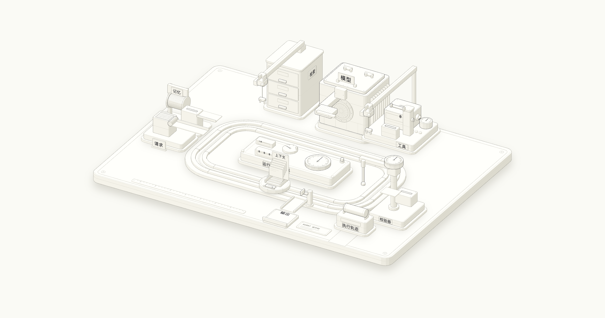
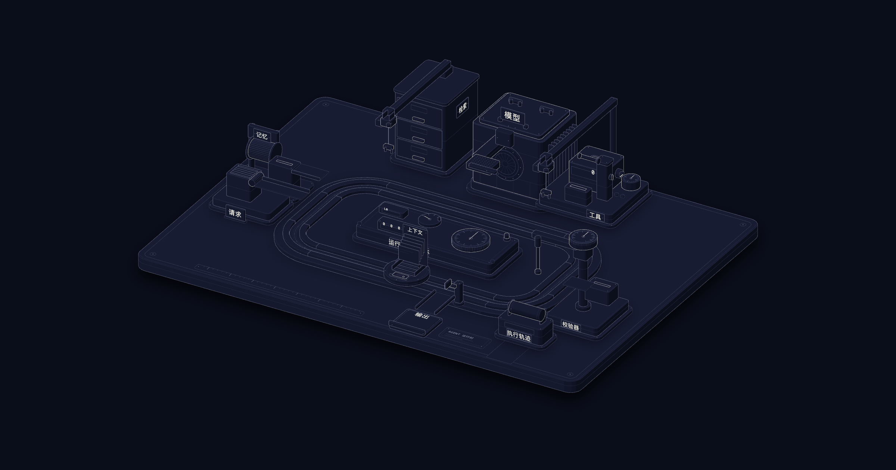
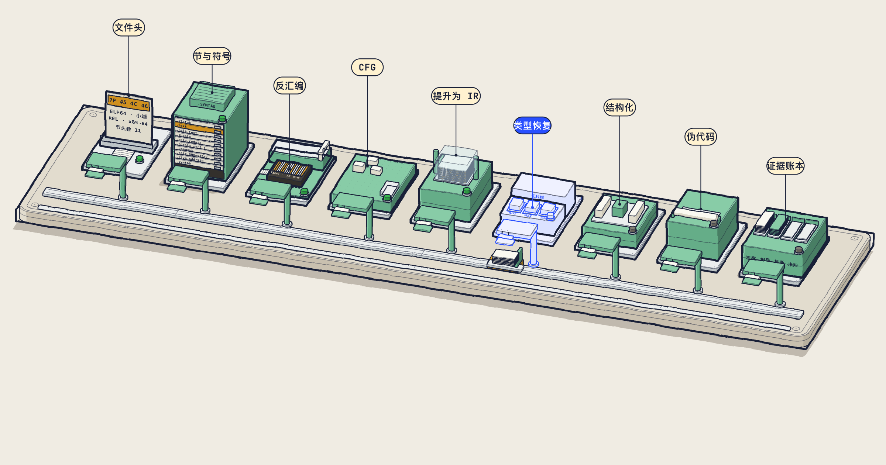
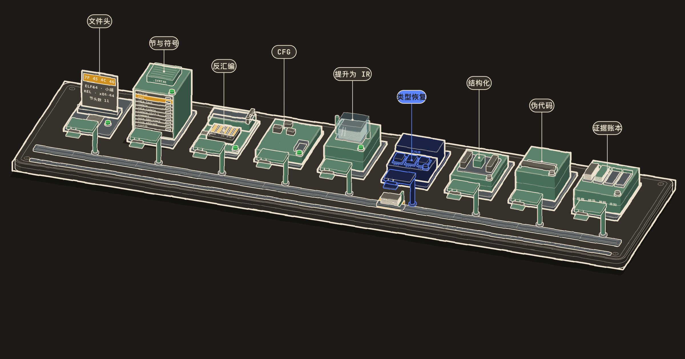
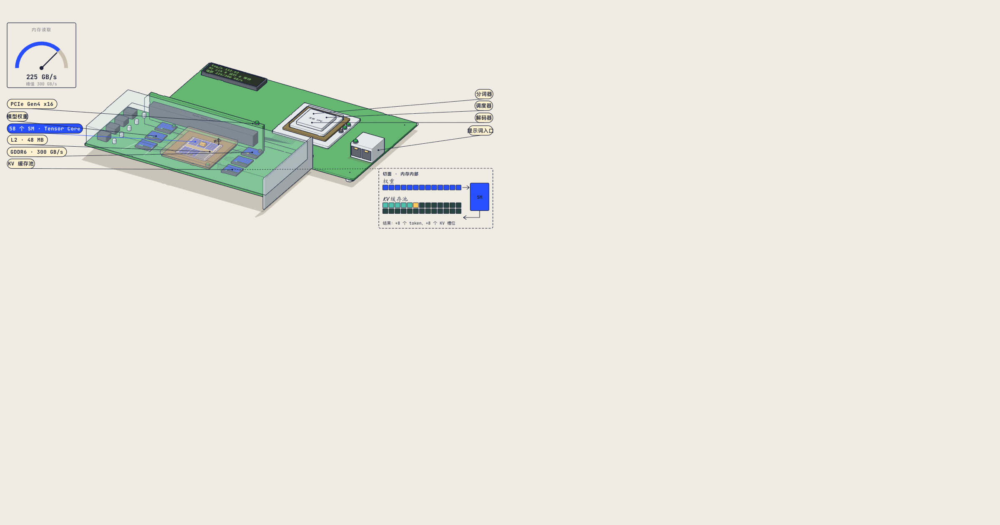
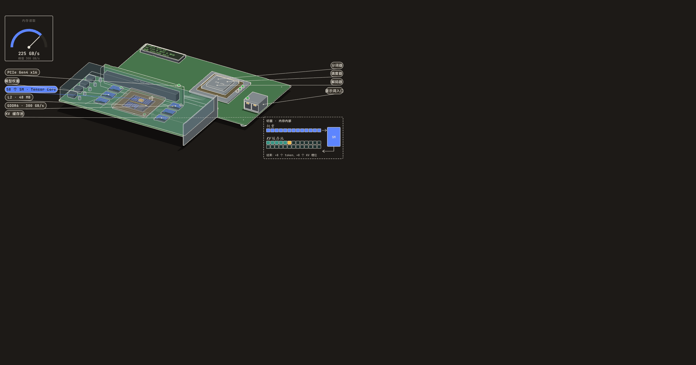

AI Engineering
from Scratch
542 节课，20 个阶段。每个算法都先从最原始的数学搭起来，然后才轮到框架登场。
npx skills add fancyboi999/ai-engineering-from-scratch-zh > 使用 start-learning 开始课程。
让 agent 成为你的导师：先做水平诊断，再生成个性化路线，并在终端中互动授课。了解运作方式
你的 agent 就是导师
你不用自己摸索课程，让 agent 来教你。
大多数课程要你自己找路。这套课程自带导师：把课程技能装进你正在用的编码 agent，它会帮你定位水平、制定学习计划，并在终端里逐课讲解。不必先读懂整个课程体系，现在就能开始。
-
01
npx skills add fancyboi999/ai-engineering-from-scratch-zh安装技能
无需克隆仓库。支持 Claude Code、Codex、Cursor，以及任何能读取 SKILL.md 的 agent。
-
02
/find-your-level定位水平
十道题。agent 把你已掌握的知识对应到起始阶段，标出可以跳过的内容，并估算所需时长。
-
03
/start-learning生成计划
agent 把你的目标和定位写进 LEARNING.md，这份学习计划就放在你的代码旁边。
-
04
/learn每次学一课
先复习上一课，再在终端里逐节讲解下一课，随后测验并记录进度。
卡在某个主题或 bug 上？/course-guide 会指向对应的课程。以上命令以 Claude Code 为例；在 Codex 中直接输入技能名；其他 agent 请让它使用该技能。查看全部技能
每节课怎么学
大多数 AI 教材都是碎片化教学。这儿一篇论文，那儿一篇微调心得，别处再来个炫酷的 agent demo。这些碎片很少能拼到一起。你做出了一个聊天机器人，却讲不清它的 loss 曲线；你给 agent 挂了个函数，却说不出调用它的那个模型内部，attention 到底在干什么。
这套课程就是那根脊椎。20 个阶段，542 节课，五种语言：Python、TypeScript、Rust、Julia、Go。一头是线性代数，另一头是自主 agent 集群。每个算法都先从最原始的数学手写出来。反向传播、分词器、注意力、agent 循环——等 PyTorch 登场时，你已经知道它底层在做什么了。
结合课程正文、概念推导、代码实验、测验与产出练习学习。333 节中文配音动画覆盖阶段 0–14，可在课程页内嵌播放。课程资源免费开放，实验所需的 GPU、云服务和模型 API 按各课要求准备。
- 问题背景：一个具体的失败。LLM 只返回文本，无法行动。
- 动手构建：纯代码，不用框架。用标准库 Python 写出 ReAct 循环。
- 实际使用：生产级工具。各家 agent SDK 运行的是同一个循环。
- 拿去用：留给自己的产物。一份可以交给编码 agent 加载的技能。
选择你想做的工作

理解课程，动手实践
在课程之外动手实践
用真实系统训练认证决策
四条 Claude 认证路线，仍然是这套课程的学法：逐步理解、运行实验、交付可检查产物，再用诊断和限时模拟题找出薄弱决策。
4 条路线33 节认证课295 道原创评估题
不隶属于 Anthropic，不颁发证书，也不保证通过。
AI Agent 内部机制
AI agent 不只是一次 LLM 调用。让一条请求穿过运转中的机器，关闭检索、工具或校验器，观察系统在哪里出错。
改变机器状态 →

反编译器内部机制
反编译器把字节变成可读代码。让一个小函数经过九个处理站，移除符号或切换解码器，观察证据记录如何区分观测事实与推断。
改变机器状态 →

LLM 推理 GPU 内部机制
解码每个 token 都要读取模型权重。跟随请求经过 NVIDIA L4 或 GB10，填满 KV 池、切换 FP8，并用 SGLang 101 的测量数据观察内存带宽如何限制速度。
改变机器状态 →

整套课程都在 GitHub 上。clone 它、fork 它，按自己的节奏学。没有付费墙，不用注册。每节课都有可运行的代码——Python、TypeScript、Rust 或 Julia，看哪种最适合讲清楚这个概念。
git clone https://github.com/fancyboi999/ai-engineering-from-scratch-zh.git